청소년상담사-1급(2교시) (2021-10-09 기출문제)
1과목: 비행상담
1. 학자와 비행유발 요인의 연결이 옳지 않은 것은?
- 에이콘(A. Aichorn): 정보처리능력 부족
- 에릭슨(E. Erickson): 정체성 위기
- 프로이트(S. Freud): 자아와 초자아의 통제기능 약화
- 고다드(H. Goddard): 지능의 결함
- 반두라(A. Bandura): 비행행위의 관찰과 학습
(정답률: 알수없음)

2. 청소년비행 이론에 관한 설명으로 옳은 것은?
- 긴장이론에서는 자신의 범죄를 도덕적으로 문제가 없는 정당한 행위로 합리화시키며 비행을 지속한다고 본다.
- 중화이론은 비행기회와 낮은 자아통제력이 상호작용하여 비행이 발생한다고 본다.
- 아노미이론은 내적 또는 외적 통제를 비행극복의 요인으로 본다.
- 차별강화이론은 비행을 하지 않는 청소년들에 대해 관심을 갖고 원인을 규명한다.
- 사회유대이론은 애착, 관여, 참여, 신념을 사회유대를 높이는 요소로 본다.
(정답률: 알수없음)
3. 학교폭력예방 및 대책에 관한 법률에서 피해학생측이 심의위원회의 개최를 원하지 않는 경미한 사안의 경우, 학교장이 자체해결 할 수 있는 충족요건으로 옳지 않은 것은?
- 가해학생이 반성하는 경우
- 학교폭력이 지속적이지 않은 경우
- 재산상 피해가 없거나 즉각 복구된 경우
- 학교폭력에 대한 신고, 진술, 자료제공 등에 대한 보복행위가 아닌 경우
- 2주 이상의 신체적ㆍ정신적 치료가 필요한 진단서를 발급받지 않은 경우
(정답률: 알수없음)
4. 비행청소년의 중화기술과 사례의 연결이 옳지 않은 것은?
- 비난자 비난: 저보다 어른들이 더 나쁜 행동을 많이 하는데요?
- 책임의 부인: 술에 취해 정신이 없어 어쩔 수 없었어요.
- 피해자 부인: 나쁜 놈은 맞아도 싸요.
- 충성심 요구: 친구와의 의리를 지키기 위해 그랬어요.
- 피해발생의 부인: 협박 때문에 시키는 대로 할 수 밖에 없었어요. 전 시키는대로 한 것 밖에 없어요.
(정답률: 알수없음)
5. DSM-5의 품행장애 진단기준으로 옳은 것을 모두 고른 것은?
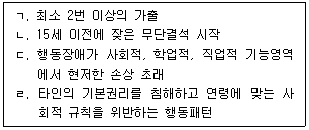
- ㄱ, ㄴ
- ㄷ, ㄹ
- ㄱ, ㄷ, ㄹ
- ㄴ, ㄷ, ㄹ
- ㄱ, ㄴ, ㄷ, ㄹ
(정답률: 알수없음)
6. 학교폭력예방 및 대책에 관한 법령에 따른 학교폭력 분쟁조정의 설명으로 옳은 것을 모두 고른 것은?
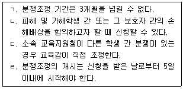
- ㄱ, ㄴ
- ㄴ, ㄹ
- ㄱ, ㄷ, ㄹ
- ㄴ, ㄷ, ㄹ
- ㄱ, ㄴ, ㄷ, ㄹ
(정답률: 알수없음)
7. 청소년의 공격성과 충동성을 높이는 생물학적 원인으로 옳은 것을 모두 고른 것은?
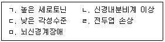
- ㄱ, ㄴ, ㄷ
- ㄴ, ㄹ, ㅁ
- ㄱ, ㄴ, ㄷ, ㅁ
- ㄴ, ㄷ, ㄹ, ㅁ
- ㄱ, ㄴ, ㄷ, ㄹ, ㅁ
(정답률: 알수없음)
8. 청소년비행의 특징으로 옳은 것은?
- 저학력화 경향을 보인다.
- 집단화 경향을 나타낸다.
- 고연령화 경향을 보인다.
- 비행동기가 신체 및 안전의 욕구로 변화하고 있다.
- 비행과 사회경제적 계층은 상관이 없다.
(정답률: 알수없음)
9. 다음에서 설명하는 비행이론은?
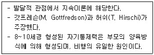
- 낙인이론
- 사회해체이론
- 차별접촉이론
- 차별기회이론
- 일반범죄이론
(정답률: 알수없음)
10. 청소년비행에 관한 내용으로 옳은 것은?
- 소년범죄를 제외한 개념이다.
- 성격 및 환경의 영향으로 범죄가능성이 있는 우범소년은 제외된다.
- 처벌보다 보호 및 교육의 관점을 중요시 한다.
- 폭행과 절도는 지위비행이다.
- 시대나 문화에 따라 의미가 변하지 않는다.
(정답률: 알수없음)
11. 다음에서 설명하는 사이버비행의 유형은?
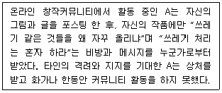
- 사이버 감옥(cyber jail)
- 플레이밍(flaming)
- 사이버 왕따(cyber bullying)
- 이미지 불링(image bullying)
- 사이버 갈취(cyber extortion)
(정답률: 알수없음)
12. 모핏(T. Moffitt)의 청소년기 한정형 비행에 관한 설명으로 옳은 것은?
- 부적절한 양육에 의한 낮은 자기통제력이 원인이다.
- 신경심리학적 결함이 원인이다.
- 생물학적 성숙과 사회적 기대 사이의 불균형에 기인한다.
- 근본적인 기질과 성격 그리고 변화되는 사회적 환경에 따라 비행의 형태가 달라진다.
- 유치원부터 시작해 성인기까지 지속된다.
(정답률: 알수없음)
13. 비행청소년 성격평가에 사용하는 PAI검사의 하위요인 중 타당도척도로 옳지 않은 것은?
- 온정성 척도
- 비일관적 척도
- 저빈도 척도
- 부정적 인상 척도
- 긍정적 인상 척도
(정답률: 알수없음)
14. 비행청소년의 인지기능 검사를 위한 웩슬러검사(K-WAIS-Ⅳ)의 보충 소검사에 해당하는 것을 모두 고른 것은?
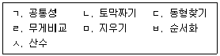
- ㄱ, ㄷ, ㄹ
- ㄴ, ㄹ, ㅂ
- ㄷ, ㄹ, ㅁ
- ㄹ, ㅁ, ㅂ
- ㅁ, ㅂ, ㅅ
(정답률: 알수없음)
15. MMPI-2 검사의 2코드 유형 중 4-9/9-4코드에 관한 해석으로 옳지 않은 것은?
- 에너지가 없고 무기력하며 무관심하다.
- 반사회적 경향을 보인다.
- 규칙을 준수하지 않는다.
- 대인관계가 피상적이고 얕은 수준이다.
- 윤리의식이 부족하다.
(정답률: 알수없음)
16. 비행청소년을 위한 해결중심단기치료에서 치료목표 설정의 원칙으로 옳지 않은 것은?
- 내담자에게 중요한 것을 목표로 한다.
- 내담자에게 없는 것 보다는 있는 것에 관심을 둔다.
- 내담자에게 구체적이고 행동적인 것을 목표로 한다.
- 내담자의 무의식을 의식화시키고 성격을 재구성한다.
- 내담자의 작은 강점을 확장시키고 변화의 기반으로 삼는다.
(정답률: 알수없음)
17. 다음에서 설명하는 청소년비행 상담이론은?
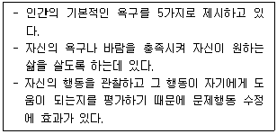
- 정신분석이론
- 현실치료이론
- 교류분석이론
- 대상관계이론
- 개인심리이론
(정답률: 알수없음)
18. 집단상담을 효과적으로 이끌기 위해 상담자가 알아야 할 비행청소년의 특징에 해당하는 것은?
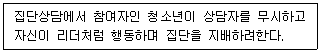
- 가짜 자부심(false pride)
- 꾸미는 태도(feinting)
- 파워게임(power play)
- 에너지(energy)
- 긍정적인 생각 좀먹기(corrosion)
(정답률: 알수없음)
19. 소년법상 소년보호 사건의 보호처분 절차에 관한 사항으로 옳지 않은 것은?
- 소년부 판사는 송치서와 조사관의 조사보고에 따라 사건의 심리를 개시할 수 없거나 개시할 필요가 없다고 인정하면 심리를 개시하지 아니한다는 결정을 하여야 한다.
- 심리는 공개하지 아니한다. 다만, 소년부 판사는 적당하다고 인정하는 자에게 참석을 허가할 수 있다.
- 본인이 출석하지 않는 경우 보호자 및 보조인의 출석으로 처분의견을 정할 수 있다.
- 소년부 판사는 검증, 압수 또는 수색을 할 수 있다.
- 소년부 판사는 심리 결과 보호처분을 할 수 없거나 할 필요가 없다고 인정하면 그 취지의 결정을 하고, 이를 사건 본인과 보호자에게 알려야 한다.
(정답률: 알수없음)
20. 회복적 사법에 관한 설명으로 옳지 않은 것은?
- 용서, 보상, 치유, 회복, 통합 등을 강조한다.
- 강제적 처벌을 부과한다.
- 비행이 야기한 손상을 회복시킨다.
- 갈등을 해결하기 위해서는 법원 뿐만 아니라 지역사회공동체의 협력을 필요로 한다.
- 피해자와 가해자를 비롯한 모든 사람에 대한 존중이다.
(정답률: 알수없음)
21. 박한샘, 오익수의 비행청소년 탈비행화과정 모델에서 다음과 같은 행동특징에 해당하는 단계는?
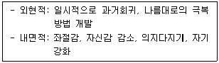
- 회피하기
- 유혹 이겨내기
- 마음트기
- 방향잡기
- 전환기
(정답률: 알수없음)
22. 학교폭력의 상담적 개입에서 또래/학교관련 위험요인을 모두 고른 것은?
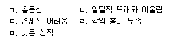
- ㄱ, ㄷ, ㄹ
- ㄱ, ㄷ, ㅁ
- ㄱ, ㄹ, ㅁ
- ㄴ, ㄷ, ㄹ
- ㄴ, ㄹ, ㅁ
(정답률: 알수없음)
23. 비행청소년 상담에서 종결단계에 이루어지는 작업으로 옳지 않은 것은?
- 작별인사
- 미진사항 취급하기
- 이별과정 다루기
- 내담자의 성장과 변화에 대한 평가
- 새로운 지각탐색 및 행동의 변화
(정답률: 알수없음)
24. 벡(A. Beck)의 약물남용 인지치료모형에서 다음의 예와 관련된 신념은?
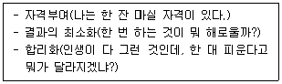
- 통제적 신념
- 촉진적 신념
- 핵심적 신념
- 합리적 신념
- 회복적 신념
(정답률: 알수없음)
25. 소년법상 보호처분과 그 내용의 연결이 옳은 것은?
- 1호 처분 - 보호자 또는 보호자를 대신하여 소년을 보호할 수 있는 자에게 감호 위탁
- 2호 처분 - 보호관찰관의 단기 보호관찰
- 3호 처분 - 수강명령
- 4호 처분 - 사회봉사명령
- 8호 처분 - 3개월 이내의 소년원 송치
(정답률: 알수없음)
2과목: 성상담
26. 성지향성에 관한 설명 중 옳은 것은?
- 킨제이(A. Kinsey)는 성지향성을 연속적 4단계로 분류하여 연구하였다.
- 무성애자는 성적 이끌림이 없어서 이성에 대한 사랑이 불가능하다.
- AVEN은 무성애자 네트워크이다.
- LGBT는 이성애자를 지칭한다.
- 한국의 전문상담 영역에서 동성애를 질병으로 본다.
(정답률: 알수없음)
27. 성에 관한 용어의 설명으로 옳지 않은 것은?
- 커밍아웃: 자신의 성정체성을 스스로 밝히는 것을 말한다.
- 이반: 동성애자들이 스스로를 일반인과 분리하여 지칭한다.
- 피데라스티: 자신보다 나이가 많은 노인에 대해 성적 매력을 느끼고 흥분한다.
- 게이: 전체 동성애자들을 말하나, 현재는 남성 동성애자를 가리킨다.
- 양성성: 사회심리적 성으로 남성성과 여성성이 동시에 내재화되어 있는 경향을 말한다.
(정답률: 알수없음)
28. 인공임신중절수술(낙태)에 관한 설명으로 옳은 것은?
- 모자보건법 14조에 의해 여자 청소년이 남자 형제에 의해 임신된 경우 낙태가 가능하다.
- 한국의 경우 병원마다 낙태 가능한 개월 수가 다르다.
- 한국은 2021년 1월 1일자로 낙태죄가 폐지되었다.
- 네덜란드는 부모선택권이 적용되어 낙태가 허용되지 않는다.
- 한국에서 인공임신중절수술을 위한 유급 휴가는 10대 여성 근로자에게 허용된다.
(정답률: 알수없음)
29. 아동청소년 성폭력이 발생했을 경우 신고 의무대상 시설이 아닌 곳은?
- 체육단체
- 청소년 활동 시설
- 의료기관
- 제주국제학교
- 경찰서
(정답률: 알수없음)
30. 청소년 성교육 내용에서 피임법 조건으로 옳은 것을 모두 고른 것은?
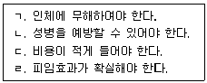
- ㄱ, ㄴ
- ㄴ, ㄷ
- ㄷ, ㄹ
- ㄴ, ㄷ, ㄹ
- ㄱ, ㄴ, ㄷ, ㄹ
(정답률: 알수없음)
31. 다음 사례에서 청소년이 감염된 질병은?
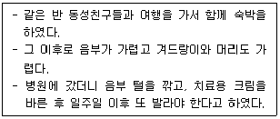
- 콘딜로마
- 클라미디아
- 임질
- 사면발이
- 매독
(정답률: 알수없음)
32. ( )에 들어갈 호르몬을 옳게 나열한 것은?
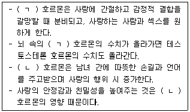
- ㄱ: 페로몬, ㄴ: 도파민
- ㄱ: 도파민, ㄴ: 옥시토신
- ㄱ: 에스트로겐, ㄴ: 페로몬
- ㄱ: 페로몬, ㄴ: 에스트로겐
- ㄱ: 옥시토신, ㄴ: 페로몬
(정답률: 알수없음)
33. 페미니즘의 시각에서 연구를 한 성 연구자로 옳은 것은?
- 하이트
- 크라프트 에빙
- 프로이트
- 엘리스
- 허슈펠트
(정답률: 알수없음)
34. 청소년 성의 발달에 관한 설명으로 옳지 않은 것은?
- 생식세포를 만드는 곳은 난소와 고환이다.
- 여성의 음핵(클리토리스)은 남성의 귀두에 해당한다.
- 여성의 난관은 자궁과 난소를 연결한다.
- 전립선은 정액의 일부를 만들며, 정자운동을 촉진한다.
- 쿠퍼선은 여성에게 성적 흥분을 일으키고 윤활유를 배출한다.
(정답률: 알수없음)
35. 다음 내용을 설명하는 용어로 옳은 것은?
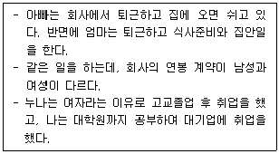
- 성분리주의
- 성차별
- 기회박탈주의
- 양성평등주의
- 역차별
(정답률: 알수없음)
36. 스턴버그(R. Sternberg)의 사랑의 삼각이론에 관한 설명으로 옳지 않은 것은?
- 낭만적 사랑: 친밀감 + 열정
- 우애적 사랑: 친밀감 + 헌신
- 얼빠진 사랑: 열정 + 헌신
- 성숙한 사랑: 좋아함 + 친밀감
- 도취된 사랑: 열정
(정답률: 알수없음)
37. 성상담 초기단계에서 상담자의 반응으로 옳지 않은 것은?
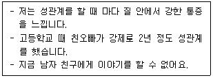
- 통증의 원인은 신체적 또는 심리적 원인이 있을 수 있어요.
- 사춘기 때 성폭력 경험이 관련될 수 있어요.
- 의학적으로 통증 장애를 치료할 수 있어요.
- 지금 남자 친구와 당분간 만나지 않는 것이 나을 것 같아요.
- 연구 결과에 의하면 여성 환자의 일부가 성교 통증을 호소해요.
(정답률: 알수없음)
38. 사이버 성상담 특징과 관련하여 옳지 않은 것은?
- 채팅 상담은 실시간 상담으로 얼굴이 보이지 않아 두려움에서 벗어날 수 있다.
- 게시판 상담은 익명성을 보장할 수 있어 솔직한 대화나 감정 표현이 가능하다.
- 이메일을 이용하는 경우는 장기간 상담이 지속가능하고, 내담자의 감정정리가 용이하다.
- 시간과 공간의 제약을 받는다.
- 비언어적 메시지를 파악하기 어렵다.
(정답률: 알수없음)
39. 성폭력 신고에 관한 내용으로 옳지 않은 것은?
- 발생 사실을 알게 된 때에 즉시 신고한다.
- 수사기관에 신고한다.
- 피해자가 미성년자인 경우 보호자의 동의를 받고 신고해야 한다.
- 학원과 같은 교습소의 종사자도 신고의무자에 해당된다.
- 신고의무와 상관없이 누구든지 신고할 수 있다.
(정답률: 알수없음)
40. 다음 성폭력 피해 청소년 A에 대한 상담기법에 관한 내용으로 옳지 않은 것은?
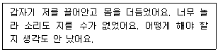
- '성추행은 아닌 거죠?'라고 확인하는 질문
- '그랬군요.'라는 최소한의 촉진적 반응
- '너무 놀라고 무서웠겠네요!'라는 감정반영
- '그러니까 갑자기 그런 일이 일어나 어떻게 할 수가 없었다는 얘기군요.'라는 재진술
- '선생님도 너무 놀라면 생각을 제대로 할 수가 없더라구요.'라는 상담자 자기개방
(정답률: 알수없음)
41. 음란물의 영향에 관한 설명으로 옳은 것은?
- 실제 성생활에는 문제를 일으키지 않는다.
- 음란물에 둔감화되어 더 자극적인 것을 찾게 된다.
- 음란물을 보면 성 충동이 해소되어 성폭력이 감소된다.
- 폭력적인 성에 대한 관대한 태도가 감소된다.
- 이성을 인격체로 보는 시각을 갖게 된다.
(정답률: 알수없음)
42. 다음에서 설명하는 코토이스(C. Courtois)가 제시한 성폭력 피해자 치료이론은?
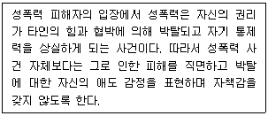
- 학습이론
- 자아발달이론
- 손실이론
- 여성주의적 이론
- 일상활동이론
(정답률: 알수없음)
43. 아동ㆍ청소년의 성보호에 관한 법률상 아동ㆍ청소년의 성을 사는 행위에 해당되는 것을 모두 고른 것은?
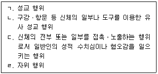
- ㄱ
- ㄴ, ㄷ
- ㄱ, ㄴ, ㄷ
- ㄱ, ㄴ, ㄹ
- ㄱ, ㄴ, ㄷ, ㄹ
(정답률: 알수없음)
44. 성폭력 가해자 상담의 목표에 관한 내용으로 옳지 않은 것은?
- 부적절한 성적 행동을 중단한다.
- 대인관계에서 상호 존중하는 방법을 배운다.
- 자신의 감정을 지각하고 표현할 능력을 증가시킨다.
- 자신의 행동에 대한 책임감에서 벗어난다.
- 폭력에 대한 태도를 변화시킨다.
(정답률: 알수없음)
45. 아동ㆍ청소년의 성보호에 관한 법률상 아동ㆍ청소년이용음란물의 제작ㆍ배포 등에 관한 내용으로 옳은 것을 모두 고른 것은?
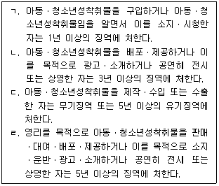
- ㄱ, ㄴ
- ㄷ, ㄹ
- ㄱ, ㄷ, ㄹ
- ㄴ, ㄷ, ㄹ
- ㄱ, ㄴ, ㄷ, ㄹ
(정답률: 알수없음)
46. 성 상담에서 상담자가 갖추어야 할 윤리적 태도로 옳은 것은?
- 내담자에게 상담자 자신의 명확한 성 가치관을 학습시킨다.
- 상담자는 성 가치관과 신념 뿐 아니라 자신의 성행동에 대해서도 인식해야 한다.
- 상담자의 성 가치관이 상담과정에 어떻게 영향을 주는지에 대해 관심을 두지 않는다.
- 비밀유지가 중요한 성 상담에서는 이중관계를 받아들이고 이를 활용한다.
- 성 상담에 관한 연구를 할 때 서면동의서 없이 가명처리 후 진행한다.
(정답률: 알수없음)
47. 성피해 상담의 종결단계에 관한 내용으로 옳지 않은 것은?
- 내담자가 호소한 문제의 해결정도를 살펴본다.
- 상담자가 종결이 필요하다고 판단될 때 회기 내에서 바로 종결한다.
- 상담성과를 내담자와 평가한다.
- 종결 후에도 미해결 과제가 있을 수 있음을 알리고 대처할 수 있도록 한다.
- 종결에 대한 이별 감정을 다룬다.
(정답률: 알수없음)
48. 다음 A양의 사례에 해당하는 캐스(V. Cass)의 성정체성 발달과정은?
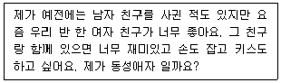
- 정체성 혼란
- 정체성 자긍
- 정체성 수용
- 정체성 용인
- 정체성 통합
(정답률: 알수없음)
49. DSM-5의 소아성애장애(Pedophilic Disorder)에 관한 내용으로 옳지 않은 것은?
- 연령이 적어도 13세 이상의 개인에게 진단된다.
- 반복적이고 강렬한 성적 흥분이 성적 공상, 성적 충동 또는 성적 행동으로 발현되며 적어도 6개월 이상 지속될 때 진단된다.
- 사춘기 이전의 아동들을 대상으로 성적 활동을 한다.
- 남성이 여성보다 더 높은 유병률을 보인다.
- 성적 충동에 따른 행동이 현저한 고통이나 대인관계의 어려움을 초래한다.
(정답률: 알수없음)
50. 성 피해자를 위한 집단상담의 치료효과에 관한 설명으로 옳지 않은 것은?
- 지지 관계로 발전될 수 있다.
- 성 피해로 인한 감정을 탐색하게 된다.
- 피해의식을 공고히 할 수 있다.
- 성 피해에 관한 부정적인 신념에 직면하게 된다.
- 성 피해로 생긴 공통적인 감정을 나눌 수 있다.
(정답률: 알수없음)
3과목: 약물상담
51. 중추신경 흥분제로 작용하는 약물은?
- 아편
- 크랙
- 헤로인
- 메사돈
- 모르핀
(정답률: 알수없음)
52. 약물남용의 피해에 관한 내용으로 옳지 않은 것은?
- 심리 및 신체건강이 나빠진다.
- 가정 파탄을 가져온다.
- 법적 문제, 사회적 문제가 유발된다.
- 건전한 친구들과 관계가 나빠진다.
- 보다 소심하고 신중해진다.
(정답률: 알수없음)
53. 약물을 반복해서 복용했을 때 같은 용량으로 나타나는 효과가 점점 감소되는 현상은?
- 금단
- 내성
- 충동성
- 의존성
- 부정
(정답률: 알수없음)
54. 청소년 약물남용 예방에 관한 설명으로 옳은 것을 모두 고른 것은?
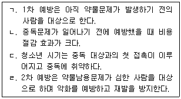
- ㄱ, ㄴ, ㄷ
- ㄱ, ㄴ, ㄹ
- ㄱ, ㄷ, ㄹ
- ㄴ, ㄷ, ㄹ
- ㄱ, ㄴ, ㄷ, ㄹ
(정답률: 알수없음)
55. 청소년 A와 같은 사례를 보이는 장애는?
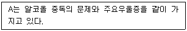
- 이중장애
- 행동장애
- 감정장애
- 교차장애
- 합성물질사용장애
(정답률: 알수없음)
56. 다음 P양의 사례에서 중독자 가족 역할은?
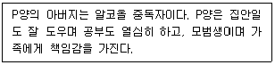
- 조정자
- 희생자
- 가족영웅
- 안내자
- 마스코트
(정답률: 알수없음)
57. 다음의 사례와 같은 특징을 보이는 것은?
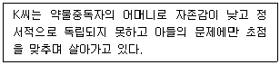
- 동반장애
- 공존장애
- 공동의존
- 교차장애
- 공병의존
(정답률: 알수없음)
58. 알코올 치료공동체(TC)에 관한 내용으로 옳지 않은 것은?
- 구성원들은 공동체의 생활 경험을 통해서 치료를 받는다.
- 회복의 목적은 술을 적절히 조절하면서 마실 수 있도록 하는 것이다.
- 사회적 환경이 곧 치료모델이라는 특징이 있다.
- 참만남 프로그램, 직업재활 등의 다양한 프로그램이 제공된다.
- 성공적인 인격의 변화에 대한 역할모델은 동료와 치료진이다.
(정답률: 알수없음)
59. 약물중독자 자조집단에 관한 내용으로 옳지 않은 것은?
- 전문가는 자조집단을 주도하면서 통제할 책임이 있다.
- 12단계는 NA 프로그램의 핵심으로, 시행착오의 경험을 바탕으로 구성된 영적 프로그램이다.
- 중독자는 12단계를 믿고 따를 것인가 아닌가를 선택하여 자신이 직접 실천한다.
- 전문가는 자조집단을 있는 그대로 존중하는 태도를 가져야 한다.
- 중독자는 자신이 약물 사용에 있어 무기력하다는 사실을 받아들여야 한다.
(정답률: 알수없음)
60. 동기강화상담과 관련된 내용으로 옳은 것을 모두 고른 것은?
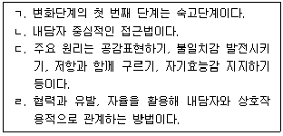
- ㄴ, ㄷ
- ㄱ, ㄴ, ㄹ
- ㄱ, ㄷ, ㄹ
- ㄴ, ㄷ, ㄹ
- ㄱ, ㄴ, ㄷ, ㄹ
(정답률: 알수없음)
61. 약물중독자를 대상으로 한 인지행동상담에 관한 내용으로 옳지 않은 것은?
- 주의분산법은 갈망을 다루기 위해 사용되는 방법이다.
- 기본과제는 약물에서 회복하도록 돕는 것과 일상생활을 잘하도록 하는 것이다.
- 허용성 믿음과 예기 믿음이 더 강해지도록 돕는다.
- 소크라테스식 논답법을 사용한다.
- 스트레스 관리기법과 문제해결법을 가르친다.
(정답률: 알수없음)
62. 약물중독 재발 방지를 위한 개입으로 옳지 않은 것은?
- 고위험 상황 확인하기
- 변화하려는 노력 강화하기
- 약물을 하는 친구와 관계 끊기
- 약물유혹이 많은 곳에서 자기의지 시험해보기
- 약물을 사용하지 않고 어려움에 대처할 수 있는 기술 가르치기
(정답률: 알수없음)
63. 다음 설명에 해당되는 약물은?
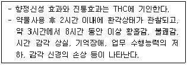
- 대마
- 코카인
- 헤로인
- 엑스터시
- 부프레노르핀
(정답률: 알수없음)
64. 비셀과 로이스(L. Bissell & J. E. Royce)가 말한 중독상담자의 역량과 책임에 관한 설명으로 옳은 것을 모두 고른 것은?
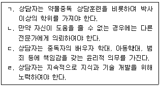
- ㄱ, ㄷ
- ㄴ, ㄷ
- ㄴ, ㄹ
- ㄴ, ㄷ, ㄹ
- ㄱ, ㄴ, ㄷ, ㄹ
(정답률: 알수없음)
65. 마약류 중독에 관한 설명으로 옳지 않은 것은?
- 마약류는 중독성이 강해서 예방교육이 중요하다.
- 2017년 이후 19세 이하 마약류 사범이 증가하는 추세이다.
- 2019년 이후 신종 마약류 적발이 증가하고 있다.
- 최근 코로나19 상황으로 인해 국내 체류 외국인 마약류 사범은 감소하였다.
- 청소년들이 SNS, 포털사이트 검색 등에 쉽게 노출되어 호기심으로 구입하는 사례가 증가하고 있다.
(정답률: 알수없음)
66. 약물중독 관련 평가 도구 CAGE에 관한 설명으로 옳지 않은 것은?
- 간편하게 알코올의존을 선별할 수 있는 측정도구이다.
- 자기보고형 측정도구 4문항으로 구성되어 있다.
- 2문항 이상 '그렇다'라고 응답하면 알코올의존으로 선별된다.
- 음주문제 선별을 위한 1차적 검사도구로 사용되고 있다.
- 현재의 문제, 알코올 소비 정도, 폭음 등을 사정하는 도구이다.
(정답률: 알수없음)
67. 다음 A양의 사례는 젤리넥(E. K. Jellinek)이 말한 알코올 중독의 단계 중 어느 단계에 해당하는가?
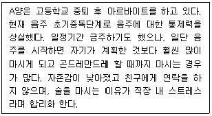
- 전 알코올증상 단계(pre alcoholic symptomatic phase)
- 전조 단계(predromal phase)
- 결정적 단계(crucial phase)
- 만성 단계(chronic phase)
- 후 알코올증상 단계(post alcoholic symptomatic phase)
(정답률: 알수없음)
68. 청소년보호법상 ( )에 들어갈 내용이 옳게 나열된 것은?
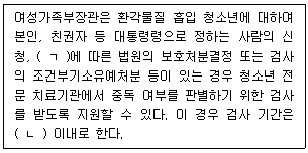
- ㄱ: 소년법, ㄴ: 15일
- ㄱ: 청소년보호법, ㄴ: 15일
- ㄱ: 소년법, ㄴ: 1개월
- ㄱ: 청소년보호법, ㄴ: 1개월
- ㄱ: 청소년복지지원법, ㄴ: 1개월
(정답률: 알수없음)
69. 중독자를 대상으로 하는 집단상담의 장점으로 옳지 않은 것은?
- 시간이나 비용면에서 효율적이다.
- 다른 사람을 보면서 '저 사람이 하면 나도 할 수 있어'하는 희망을 가지게 된다.
- 중독문제에서 회복을 경험하지 못한 내담자에게 사회성, 친밀감을 향상시킨다.
- 유사한 문제를 서로 함께 나누고 지지를 받음으로써 회복할 수 있다는 동기를 갖게 된다.
- 집단역동이나 인간관계에서 심각한 위협을 느끼는 반항적인 중독자에게 적합하다.
(정답률: 알수없음)
70. 다음 설명에 해당하는 알코올 중독 치료약물은?
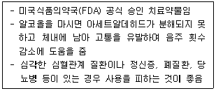
- 디설피람
- 부피로피온
- 바레니클린
- 토피라메이트
- 바클로펜
(정답률: 알수없음)
71. 중독자 상담에서 비밀유지의 예외사항에 관한 설명으로 옳은 것을 모두 고른 것은?
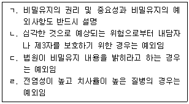
- ㄱ, ㄹ
- ㄴ, ㄷ
- ㄱ, ㄴ, ㄷ
- ㄴ, ㄷ, ㄹ
- ㄱ, ㄴ, ㄷ, ㄹ
(정답률: 알수없음)
72. 청소년 약물남용 예방을 위한 예방 집합형 모델에 따른 지역사회의 전략으로 옳지 않은 것은?
- 지역사회 건강 증진
- 광범위한 집단들과 조직들 사이의 동료의식과 연합 형성
- 교육, 정보 제공 및 기술개발
- 환경적 위험의 감소
- 법과 시행규칙의 완화
(정답률: 알수없음)
73. DSM-5 물질관련장애에 관한 내용으로 옳지 않은 것은?
- DSM-Ⅳ의 물질남용과 물질의존을 물질사용장애로 일원화 하였다.
- 중독은 크게 물질 관련 중독과 비물질 관련 중독으로 나눈다.
- 중독을 유발할 수 있는 물질에 알코올, 담배, 카페인, 수면제 등이 포함되어 있다.
- 지난 6개월 동안 진단 기준에 기록된 11가지 중 최소한 2개 이상 해당되는 경우에 해당한다.
- 증상수에 따라 심각도를 경도, 중등도, 고도로 분류한다.
(정답률: 알수없음)
74. 암페타민에 관한 설명으로 옳지 않은 것은?
- 사용 시 혈압과 심장박동수가 증가한다.
- 독일에서 심장병치료제로 개발되어 1차 세계대전 시 전투능력을 높이기 위한 각성제로 사용했다.
- 약물 사용 시 일시적으로 사고력과 기억력이 증진된다.
- 청소년들이 '잠 쫒는 약'으로 오용하기도 한다.
- 금단증상으로는 두통, 호흡곤란, 심한 발한, 위경련, 자살충동, 우울감 등을 갖게 된다.
(정답률: 알수없음)
75. DSM-5의 알코올 사용장애 진단 기준에 해당하는 것을 모두 고른 것은?
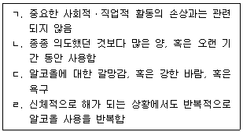
- ㄱ, ㄴ
- ㄷ, ㄹ
- ㄱ, ㄴ, ㄷ
- ㄴ, ㄷ, ㄹ
- ㄱ, ㄴ, ㄷ, ㄹ
(정답률: 알수없음)
4과목: 위기상담
76. 린더만(E. Lindemann)이 제시한 내담자의 정상적인 애도 행동으로 옳은 것을 모두 고른 것은?
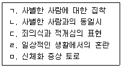
- ㄱ, ㄴ, ㄷ
- ㄱ, ㄷ, ㄹ
- ㄱ, ㄹ, ㅁ
- ㄴ, ㄷ, ㄹ, ㅁ
- ㄱ, ㄴ, ㄷ, ㄹ, ㅁ
(정답률: 알수없음)
77. DSM-5에 분류된 주요우울장애의 진단 기준으로 옳지 않은 것은?
- 거의 매일 나타나는 불면이나 과다 수면
- 거의 매일 나타나는 정신운동 초조나 지연
- 거의 매일 모든 일상 활동에 대해 흥미나 즐거움이 뚜렷하게 저하
- 체중 조절을 하고 있지 않은 상태에서 의미 있는 체중의 감소나 증가
- 반복적이고 지속적인 생각 또는 심상이 침투적으로 경험되며, 반복적 행동을 통해 불안과 괴로움을 감소시키려 함
(정답률: 알수없음)
78. 다음에서 설명하는 위기개입 이론은?
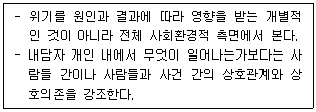
- 혼돈이론
- 체계이론
- 적응이론
- 정신분석이론
- 대인관계이론
(정답률: 알수없음)
79. 큐블러 로스(E. Kübler - Ross)가 제시한 죽음에 대한 반응으로 옳지 않은 것은?
- 타협
- 우울
- 부인
- 그리움
- 분노
(정답률: 알수없음)
80. 길리랜드(B. Gilliland)의 위기개입 6단계 모델을 옳게 나열한 것은?
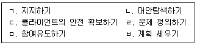
- ㄱ - ㄷ - ㅂ - ㄹ - ㄴ – ㅁ
- ㄱ - ㄹ - ㄷ - ㅂ - ㅁ – ㄴ
- ㄷ - ㄱ - ㄹ - ㅂ - ㄴ – ㅁ
- ㄷ - ㄹ - ㄱ - ㅂ - ㅁ – ㄴ
- ㄹ - ㄷ - ㄱ - ㄴ - ㅂ - ㅁ
(정답률: 알수없음)
81. 청소년 위기의 위험을 높이는 상황적 선행 요인으로 옳지 않은 것은?
- 가족 간의 갈등
- 가출
- 친구와의 불화
- 낮은 자아존중감
- 학업 부진
(정답률: 알수없음)
82. 학교폭력 가해자 관련 위험요인이 아닌 것은?
- 낮은 자아존중감 및 부정적 자기개념
- 부모의 일관성 있는 양육태도
- 욕구좌절
- 또래폭력 경험
- 처벌적 상호작용
(정답률: 알수없음)
83. 상담자 소진에 관한 설명으로 옳지 않은 것은?
- 스트레스가 중재되지 못하거나 지지체계가 없을 때 일어날 수 있다.
- 가벼운 에너지 손실에서부터 죽음에 이르기까지 그 심각성의 정도가 다양하다.
- 소진이 증가하면서 점진적으로 신체적, 정신적 건강의 문제를 일으킬 수 있다.
- 개인적ㆍ직업적 성장에 도움이 되지 않는다.
- 일 자체뿐만 아니라 환경적 요인도 소진에 영향을 미치기도 한다.
(정답률: 알수없음)
84. 테어(L. Terr)의 아동기 외상에 관한 설명으로 옳지 않은 것은?
- 유형 I 외상은 갑작스럽고 뚜렷한 외상 경험이다.
- 유형 I 외상을 경험한 아동은 부인, 억압, 해리 등 심리적 방어기제와 대처기술을 발전시킨다.
- 유형 I 외상을 경험한 아동은 인지적 재검토, 잘못된 지각, 사건에 대한 시간 왜곡과 같은 특징을 보인다.
- 유형 II 외상을 경험한 아동은 정서적으로 감정의 부재, 분노 또는 지속적인 슬픔을 보인다.
- 지속적인 신체적ㆍ성적 학대를 받는 아동과 전쟁난민 아동이 전형적인 유형 II 외상에 속한다.
(정답률: 알수없음)
85. 다음에서 설명하는 트라우마 체계 치료의 단계는?
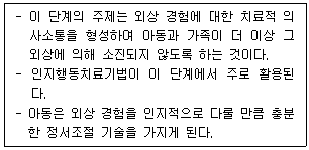
- 이해단계
- 안정단계
- 극복단계
- 생존단계
- 유지단계
(정답률: 알수없음)
86. 다음에서 설명하는 위기개입 방법은?
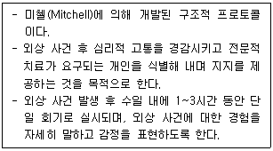
- 심상치료(IP)
- 심리적 응급처치(PFA)
- 위기상황 스트레스 디브리핑(CISD)
- 인지행동치료(CBT)
- 위기상황 스트레스 관리(CISM)
(정답률: 알수없음)
87. 다음의 질문들에 모두 해당하는 외상후 증상은?
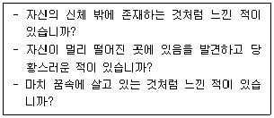
- 해리
- 침투적 사고
- 플래시백
- 외상후 악몽
- 망상
(정답률: 알수없음)
88. 위기의 일반적 원칙과 특성에 관한 설명으로 옳지 않은 것은?
- 위기를 경험하는 개인에게 위험과 기회를 제공한다.
- 위기는 만병통치약이나 빠른 해결책이 적용되지 않는다.
- 위기개입 전문가의 삶의 경험은 위기개입 효과성과 관련이 없다.
- 위기는 성장과 변화의 원동력이 될 수 있다.
- 위기를 위협적으로 지각하는 정도는 개인에 따라 다르다.
(정답률: 알수없음)
89. 다음에서 설명하는 아동학대의 유형은?
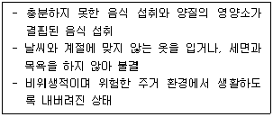
- 교육적 방임
- 신체적 방임
- 의료적 방임
- 정서적 방임
- 성적 방임
(정답률: 알수없음)
90. DSM-5에 분류된 외상 후 스트레스 장애(PTSD)의 진단 기준으로 옳은 것을 모두 고른 것은?
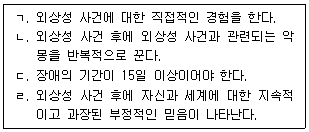
- ㄱ, ㄴ
- ㄱ, ㄹ
- ㄱ, ㄴ, ㄹ
- ㄴ, ㄷ, ㄹ
- ㄱ, ㄴ, ㄷ, ㄹ
(정답률: 알수없음)
91. 허만(J. Herman)이 제시한 재난 대응 위기 상담 모형에서 '안전' 단계의 기법이 아닌 것은?
- 신체자각과 마음챙김
- 정보제공과 심리교육
- 사례관리
- 아웃리치와 옹호
- 정상화
(정답률: 알수없음)
92. 다음에서 설명하는 외상 사건을 치료 하는 기법은?
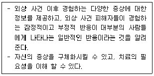
- 노출치료
- 심리교육
- 홍수법
- 안구운동 둔감화 재처리
- 점진적 근육이완
(정답률: 알수없음)
93. 스웨러(S. Swearer)의 괴롭힘에 관한 설명으로 옳지 않은 것은?
- 괴롭힘은 정상적 성장 과정의 일부이다.
- 괴롭힘은 또래, 가족, 학교 및 지역사회의 영향을 받는다.
- 건강한 사회적 관계를 형성하는 것은 괴롭힘을 중지시키는 방법의 하나이다.
- 관계적ㆍ언어적 괴롭힘은 신체적 괴롭힘 만큼 해로울 수 있다.
- 괴롭힘 금지 개입의 효과를 평가하여 새로운 개입방법의 방향을 설정 할 수 있다.
(정답률: 알수없음)
94. 학교폭력예방 및 대책에 관한 법률 제16조에 따른 피해학생에 대한 보호조치를 모두 고른 것은?
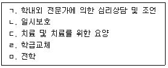
- ㄱ, ㄴ
- ㄱ, ㄷ
- ㄱ, ㄴ, ㄷ, ㄹ
- ㄴ, ㄷ, ㄹ, ㅁ
- ㄱ, ㄴ, ㄷ, ㄹ, ㅁ
(정답률: 알수없음)
95. ( )에 들어갈 내용을 옳게 나열한 것은?
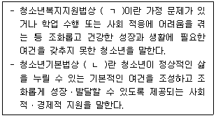
- ㄱ: 위기청소년, ㄴ: 청소년복지
- ㄱ: 가정 밖 청소년, ㄴ: 청소년복지
- ㄱ: 위기청소년, ㄴ: 청소년보호
- ㄱ: 가정 밖 청소년, ㄴ: 청소년보호
- ㄱ: 학교 밖 청소년, ㄴ: 청소년복지
(정답률: 알수없음)
96. 자살 예방을 위한 학교 차원의 개입에 있어서 고위험군 개입 방안으로 옳은 것을 모두 고른 것은?
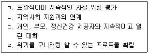
- ㄱ, ㄷ
- ㄴ, ㄹ
- ㄱ, ㄴ, ㄹ
- ㄴ, ㄷ, ㄹ
- ㄱ, ㄴ, ㄷ, ㄹ
(정답률: 알수없음)
97. 홉폴(S. Hobfoll) 등의 외상 직후 피해자들을 위한 초ㆍ중기 개입원리로 옳은 것을 모두 고른 것은?
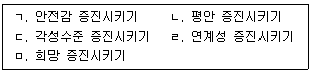
- ㄷ, ㄹ
- ㄱ, ㄴ, ㅁ
- ㄱ, ㄴ, ㄷ, ㄹ
- ㄱ, ㄴ, ㄹ, ㅁ
- ㄱ, ㄴ, ㄷ, ㄹ, ㅁ
(정답률: 알수없음)
98. 보호체계(청소년자립지원관, 청소년쉼터) 청소년의 심리ㆍ사회적 특징으로 옳은 것을 모두 고른 것은?
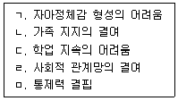
- ㄴ, ㄹ
- ㄱ, ㄴ, ㄹ
- ㄱ, ㄷ, ㅁ
- ㄱ, ㄴ, ㄷ, ㄹ
- ㄱ, ㄴ, ㄷ, ㄹ, ㅁ
(정답률: 알수없음)
99. 학교 내 모방 자살을 막기 위한 후속 조치 중 옳은 것은?
- 자살 사건을 낭만적으로 묘사한다.
- 자살 사실을 학내 방송을 통해 구성원에게 알린다.
- 매일 추도식을 개최한다.
- 위기상담을 받을 수 있는 곳을 알고 있는지 점검한다.
- 자살을 통해 고통을 끝낼 수 있음을 알린다.
(정답률: 알수없음)
100. 다음 A의 상태를 나타내는 용어로 옳은 것은?
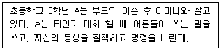
- 반동형성
- 자기비하
- 과성숙
- 주지화
- 퇴행
(정답률: 알수없음)